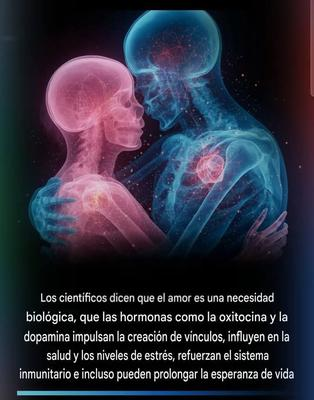

¡Vamos, cristianos!, seamos honestos: ¿sinceramente ustedes lo han logrado, o solamente se han engañado pensando que lo logran? ¿Entienden siquiera qué es realmente el amor?


Durante mucho tiempo las religiones han cubierto el concepto de «amor» en un halo místico, moralista y casi mágico. Sin embargo, la neurociencia moderna ha desmontado esa visión romántico–espiritual sustituyéndola por algo más simple, más honesto, y sobre todo, más real: el amor no es más que un fenómeno biológico, un conjunto de procesos neuroquímicos y conductuales que permiten que nuestra especie sobreviva, se desarrolle y prospere. El amor no es algo místico, ni poético, ni mucho menos un mandato sobrenatural; es neurobiología pura.
El amor es en realidad, un sistema neurobiológico de regulación, de vínculo y supervivencia. Ya sea parental, de pareja, amistoso o filial, es una emoción que activa circuitos neuronales y sustancias químicas muy concretas:
Oxitocina, que promueve el apego, la confianza y la calma fisiológica.
Dopamina, que impulsa la motivación, la búsqueda de la presencia del otro y el sentimiento de recompensa.
Serotonina, que estabiliza el estado de ánimo.
Endorfinas, que generan bienestar y reducen el dolor.
Regulación del sistema nervioso parasimpático, que disminuye el cortisol y el estrés.
Así que decir que «el amor estabiliza el organismo» no es una metáfora poética, es una descripción neurofisiológica, porque los vínculos seguros modulan la actividad de la amígdala, reducen las hormonas del estrés, mejoran la función inmune, e incluso favorecen la longevidad. Y por el contrario, la soledad crónica activa los mismos mecanismos de alarma que el peligro físico: producen inflamación elevada, cortisol alto, desgaste cognitivo y mayor riesgo de enfermedad. En otras palabras: amar y ser amado es biológicamente necesario. Pero hagamos la aclaración: amar siempre a seres reales, presentes, interactivos y significativos.
Porque además la neurociencia ha revelado a quién podemos amar realmente, y desde un punto de vista estrictamente cerebral, no es posible amar a un desconocido ni a una figura imaginaria, mística o sobrenatural. No porque falte virtud moral, sino porque:
El apego requiere experiencia compartida.
El cariño requiere contacto, historia, interacción y memoria emocional.
La confianza requiere señales reales de seguridad.
La oxitocina se libera por gestos concretos: miradas, caricias, palabras, apoyo físico y emocional.
El cerebro no forma vínculos fuertes con abstracciones, sino con presencias reales.
Por un desconocido nosotros podemos sentir sin duda simpatía, empatía o compasión, pero el amor real —el que modula la neuroquímica y la fisiología— exige que exista una relación concreta. Así que pretender que alguien ame igual a su madre que a un «Dios» invisible e intangible, o que a un transeúnte desconocido que se encuentra por la calle, es simplemente ignorar cómo funciona el cerebro humano.
En consecuencia, las enseñanzas cristianas sobre el amor no son más que órdenes imposibles disfrazados de una moral elevada. Veamos las dos enseñanzas más repetidas del cristianismo respecto al amor:
-
«Amarás al Señor tu Dios con todo tu corazón, con toda tu alma y con toda tu mente» — Mateo 22:37
Se trata de una orden que exige amar más a un ser invisible e incognoscible, que a las personas reales que cuidan de nosotros, que nos acompañan, que nos sostienen emocionalmente, y cuyo contacto activa nuestra biología de vínculo. Y obviamente esto es imposible en términos neurocientíficos, porque el cerebro no puede amar a un ser sin presencia, sin interacción, sin estímulos, sin reciprocidad. Lo único que uno puede hacer es autosugestionarse, creando una imagen mental que luego activa pequeñas descargas de dopamina y oxitocina… exactamente igual que cualquier forma de imaginación emocional.
Es decir, lo que puede sentirse por un «Dios» invisible no es amor hacia un ser real, sino hacia una idea que construimos en nuestra mente. Y confundir eso con amor real es engañoso, además de que es francamente irracional pretender que sea moralmente superior amar a un ser imaginario que a tu propia familia.
-
«Amarás a tu prójimo como a ti mismo» — Mateo 22:39
A primera vista suena hermoso, pero llevado a la práctica neurobiológica, no es más que una fantasía ética. Nosotros no podemos amar a un desconocido que encontramos en la calle igual que a nos nosotros mismos, porque:
No tenemos memoria emocional con él.
No sabemos si es alguien confiable o peligroso.
No existe ningún vínculo que estimule el circuito de recompensa.
El sistema límbico no reacciona igual ante alguien que conocemos y alguien que no.
La neuroquímica del amor requiere experiencia acumulada, no instrucciones éticas.
Lo máximo que podemos sentir por un desconocido es bondad, empatía, solidaridad, humanismo. Pero amor en el sentido pleno de la palabra, en el sentido neurobiológico profundo, no. Y pedirle o exigirle a un ser humano que funcione contra su propia biología no es moral; es antinatural.
¿Por qué entonces, estas dos enseñanzas cristianas no son moralmente superiores? —Porque la moralidad no surge de obedecer órdenes antinaturales o imposibles. Surge de actuar bien dentro de las limitaciones y capacidades reales de nuestra especie. Sólo pregúntate: ¿Cómo podría ser moral pedirte o exigirte que ames a un ser invisible más que a tu madre, o a un desconocido igual que a tus hijos? —Eso no es ninguna alta moralidad; es sólo una imposición emocional que desconoce totalmente la naturaleza humana. Porque el amor auténtico sólo existe cuando:
Conoces profundamente a alguien.
Valoras su forma de ser.
Aprecias sus virtudes.
Reconoces su apoyo.
Te sientes seguro a su lado.
Su presencia regula tu fisiología.
Todo lo demás es idealización o autosugestión. Y la autosugestión, sí, puede liberar oxitocina y dopamina… pero eso no convierte la ilusión en una virtud moral superior.
Así que, resumiendo, la neurociencia deja claro que el amor no es un acto mágico, ni un mandato divino, ni una prueba de obediencia, y tampoco puede dirigirse a lo inexistente o a lo desconocido. El amor es un sistema biológico de regulación, construido a través de vínculos reales, presenciales y significativos.
Pretender que la moralidad humana depende de amar a un «Dios» imaginario o a cualquier desconocido como a uno mismo, es ignorar cómo funciona el cerebro humano. En definitiva, el verdadero valor moral no está en seguir instrucciones imposibles, sino en cultivar vínculos reales, honestos, profundos y humanos, aquellos que verdaderamente transforman nuestra biología y sostienen nuestra vida.
[Godless Freeman]
[Crédito de imagen: Curiosity World]
Comentarios
Comments powered by Disqus